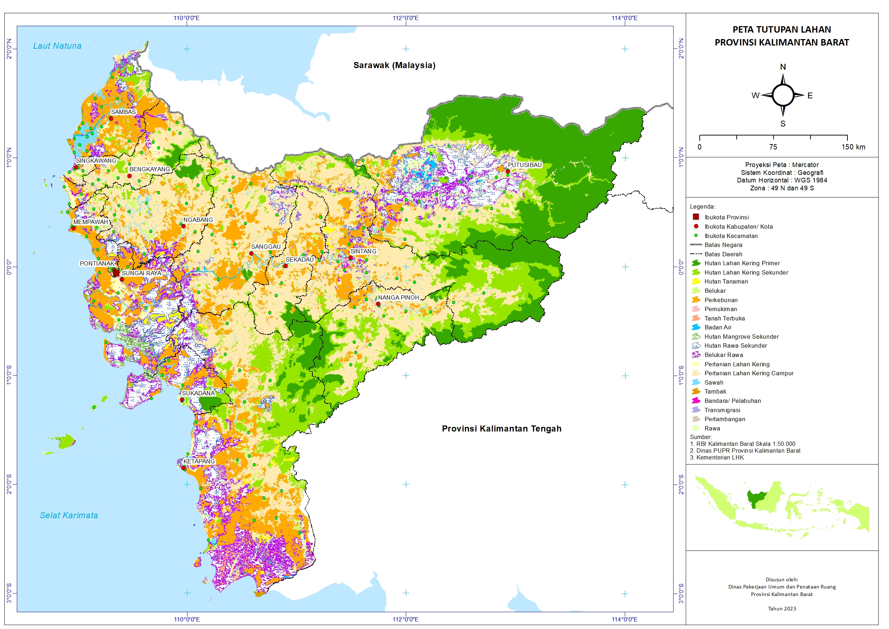

Hasil Kerja: Pemetaan
Sebagai tenaga pemetaan, saya terbiasa mengolah data lapangan menjadi visualisasi peta yang akurat untuk berbagai kebutuhan industri.

Peta Topografi Area Proyek
Deskripsi: Peta ini menunjukkan kontur ketinggian lahan seluas 50 hektar untuk perencanaan drainase. Dibuat menggunakan data GPS dan diolah dengan AutoCAD/ArcGIS.

Pemetaan Lahan Perkebunan
Deskripsi: Visualisasi batas wilayah dan kesehatan tanaman menggunakan foto udara (Drone). Berguna untuk estimasi hasil panen dan pemupukan presisi.